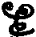
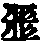
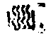

鈔
(楚教楚交二切。強取也。掠也)。
卍新纂大日本續藏經 第45冊
No.770 釋摩訶衍論記 (1卷)
【唐 聖法鈔】
第 1 卷
No. 770
釋摩訶衍論記一卷
回音瑰允也又好慧反寶冊也迴也續也此中冊字契當而已此字在文殊師利答第一經十一卷[匚@出]鏡日珠言[匚@出](月也)鏡者龍樹古稱言日珠者馬鳴古稱謂迦葉佛出世時中一長者名曰輪香有女名曰珠池如是二人各以七寶獻迦葉佛請其嗣息爾時世尊告二人言速去還所汝等所請求十七日已經當得成就所願滿足爾時二人頭地禮佛却返本處第十七日悉已滿足其日夢中彼珠池女即得好夢甚大歡喜無所譬喻所謂第一明散日輪來入腹中第二耀了滿月之輪來入腹中得此吉祥已經九月即生二子兄名日珠弟名月鏡隨其前相立名字故如是二子歲至一七即便出家詣迦葉佛隨佛世尊脩其行法常作是願生生處處不相捨離同學知識建立正法具足妙行念一覺海以此事故此二菩薩不相捨離俱行俱轉出現本釋利益眾生今此序主取彼時名立名字言月鏡日珠以何義故略去今名取過去名本釋兩論除無明闇增智慧明盲冥眾生而能開曉譬如兩曜皆生光明除滅暗夜引導眾生令不惱亂是故時事契合當中強彼名爰存而已如是因緣在無著菩薩本事因緣論第三卷也光明妙雲言光明者馬鳴往古如來名字言妙雲者龍樹往古如來名字如是二字名脩多羅中各各異說謂金剛正智經中作如是說馬鳴菩薩大光明佛龍樹菩薩妙雲相佛大莊嚴三昧經中作如是說馬鳴菩薩徧照通達無邊如來龍樹菩薩徧覆初生如來甚深道場經中作如是說馬鳴菩薩日月星明如來今依金剛正智經序主作如是說光明妙雲相焉料音羅閭反寶水月也此字在三三昧經第八卷也隔檀門往向位言隔檀門者入如意藏直門之稱言往向位者入如意藏經門之稱如是二門如其次第喻真如生滅之二門如是因緣在龍明菩薩心地品論第三十八卷摩迦羅論此云如意珠論也跋提論此云廣攝論也鄔舍摩論此云本廣釋狹論也闍他論此云本狹釋廣論也筏那提舍論此云一向義論也阿部帝論此云宗廣攝論也跋磨論此云雜論也呼呵論此云字輪論也摩僧那論此云神呪論也鍵婆論此云偈成論也九十九種文所言九種華文論者一者音韻華文論二者義林華文論三者圖像華文論四者一字華文論五者雜說華文論六者阿說共中華文論七者釋本華文論八者釋釋華文論九者內外具成華文論婆薩伊伽諾此云精[翟*隹]即喻名焉所謂眼中精[翟*隹]甚極微少譬如兔毛塵其量無差而能納受滿十方中明闇之色斯論大意亦復如是故標多羅唱提此云氣絲即是龍絲所謂龍王舌中有一氣絲甚極微細譬如頭髮其量無差而能出生攝納滿十方中種種密雲斯論大意亦復如是故馬鳴菩薩現六時中造作論教當何時耶所謂出現一百餘歲時即造作四部寶冊論云何為四一者起信論二者玄理論三者本原論四者清淨論出現(變化功德經)三百餘歲時中即造作六部論云何為六一者三昧論二者合一論三者微妙論四者中藏論五者歸真論六者徧滿論出現(摩訶摩耶經)六百歲時中造作對治邪智入道論等二十部華文論出現(常德三眛經)八百歲時中造作大總地論等三十部華文論出現(大乘本法論)佛入涅槃時中造作懺悔業障大海論等四十部華文論出現(勝頂王經)佛成道第十七日時中都無所造焉立名因緣在大明菩薩授記譬喻經第八十卷古名日炎徧照菩薩於契經中十種第一即是無盡法界經第七卷文於契經中十種殊勝即是如來藏功德經第一卷文於契經中十種作用即是上佛經第十一卷文十種周徧即是金剛寶智經第四卷文四種圓滿智即是果圓滿經第二卷文四種解脫智(同上)佛伽陀修梨毗羅反云廣略經則菩薩遮陀尸脩梨毗羅反云廣略論則憂婆提那眾反云了論僧那反云誓願阿世耶反云意樂。
論本第二
譬如虗空中飛鳥踰明耀時出十種和聲虗空輪字應如是觀言十聲者謂飛鳥一踰明耀時十塵相觸出微音故於彼一塵各取一音是故言出十種和聲也。
論本第三
譬如眠士夫及與悟士夫俱行俱轉不相離故唯據一身不取二身以為譬喻摩奢趺娑鏡反云種愛珠也輪多梨華鏡反云明耀珠也頗梨反云離珠又云應珠福多伽林反云愕木即是臰林[瑔-水+井]音造緣反實郡主焉。
論本第四
迦羅鳩奢那反云利鳥又云火鳥又云眼赤鳥。
論本第五
班多伽耶娑叉提鄔反云鬼集林會末耶提反云怖香梵檀尸多那林反云聖居山林陀摩鍵多反云仙香天殊地別天謂玄也地謂大也阿梨羅多掩尸木反云龍舌婆羅羅利多提假人此云有巧方便那尸阿多羅假人此云無巧方便。
論本第六
釋六德經如其次第一道清淨經因緣無主經具足性德經甚深如來藏經大寶無盡經通達法門經譬如阿只多遮那尸帝樹反云無邊一從樹也阿作阿故阿謂自然遮伽利娑那提衣反云安樂光耀羅衣即是帝釋莊嚴衣名也鍵尸多陀摩宮反云安樂反轉。
論本第八
定標陀阿羅觀義言標陀者反云主也言阿羅者反云伴也即此處中定主觀伴應審觀察伽摩伊陀耶反云合集婆尼羅反云散離言合集者即是粘食言散離者即是粳食也俱盧舍量反云淨穢中間謂五百弓之量而已[囗@(王/玨)]音彼乎反此字在金剛大輪無礙虗空總明陀羅尼經第一卷中。
論本第九
十鬼名字隨用建立應觀察十五神名亦如是知如是十十五之名字中各後一種在出現經中各初諸名在隱藏經中言出現者謂摩訶般若如來正智經彼隱藏經法不能見此中神呪外道經呪謂在十萬六千偈阿羅羅駄尸那總明弟子經二百五十七卷標揭那羅反云心識[○@九](音於呼反)[(几@水)/(几@山)](音那闇反)(音伊因反)(音毗入反)[○@(內-入+人)](音隱天反)(音於阿反)[水/仚](音弗八反)[旲-一+(王*王)](音去言反)(音伊入反)(音阿含反)(音只因反)(音伊允反)。
論本第十
嚤鍵訶尸闇室反云氣盛瓦爐阿那毗提人反云風病婆多訶彌尸人反云無根。
釋摩訶衍論記一卷
鈔
(楚教楚交二切。強取也。掠也)。
回
(戶恢切。違也。轉也。邪也。又回中地名)愕(五各反也)。